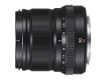

器材库 > APS画幅镜头 > XF 50/2 R WR

详细规格
镜头类型
中远摄/远摄镜头
发布日期
2017-01-19
焦距
50mm
等效35mm画幅焦距
76mm
最大光圈
f/2
最小光圈
f/16
视角（对角）
31.7°
镜头结构
9片/7组
非球面镜片
1片
光圈叶片
9片
最近对焦距离
39cm
最大放大倍率
0.15倍
驱动马达
步进马达
滤镜口径
46mm
镜头卡口
Fujifilm X
防抖
否
颜色
银色, 黑色
尺寸
60.0×59.4mm
重量
200g
附件
镜头盖 FLCP-46，镜头后盖 RLCP1，镜头遮光罩，镜头袋
备注
具有出色的全天候保护及防尘设计，可在低至-10°C的温度下使用。
picture96862018-10-07 21:493.92 分
操作性 4.00耐用性 4.00性价比 2.50解像力 4.50色彩还原 4.50机械结构 4.00
产品图 / 样片
XF 50/2 R WR